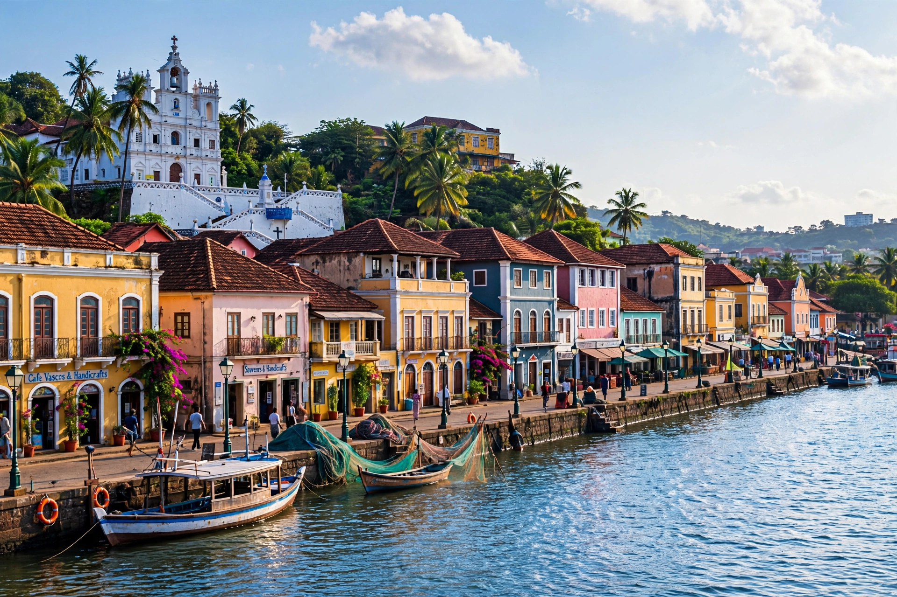

Panaji (Konkani: Ponnjem), also known as Panjim, is the capital of the Indian state of Goa and the headquarters of North Goa district. It lies on the banks of the Mandovi River estuary in the Tiswadi sub-district (taluka).

Panaji was a small port under the Bijapur Sultanate before the Portuguese conquered Goa in 1510. After epidemics devastated Old Goa, the Portuguese viceroy moved his residence to Panaji (then called Nova Goa) in 1759, and it was formally made the capital of Portuguese India in 1843. After India's annexation of Goa in 1961, it became the capital of the union territory and, from 1987, of the state of Goa.
The city is noted for its Portuguese-influenced architecture, colourful Latin-quarter houses in Fontainhas, the Church of Our Lady of the Immaculate Conception (1541), Miramar Beach, and the Kala Academy. Panaji hosts the International Film Festival of India (IFFI) annually since 2004. It was selected as one of India's Smart Cities.
Dabolim Airport serves the city; the Mandovi bridges connect it to Porvorim and the mainland, and National Highway 66 passes through the region.
See also: Old Goa, Portuguese India